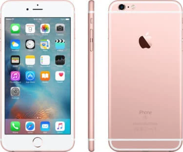
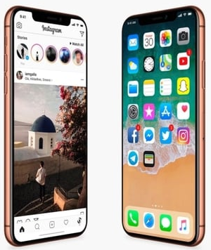

Steve Jobs is one of the icon for inovation that made a huge constructive change in way we percieve the world. He rediscovered the style and design of how the computers and mobile must be unlike any other competitive company. Apple has become a leading company in the world with net profit over 1.2 billion dollars every year.
Steve Jobs always seeked the creativity in doing everything we percieve and applied his irridescent sense of creativitiy in the electronic gadgets we use use in the today wold. Even after he expired , his creativity had an impact on all the workers of apple and his legacy went on and is going on till now.s
Ipods
Iphones

